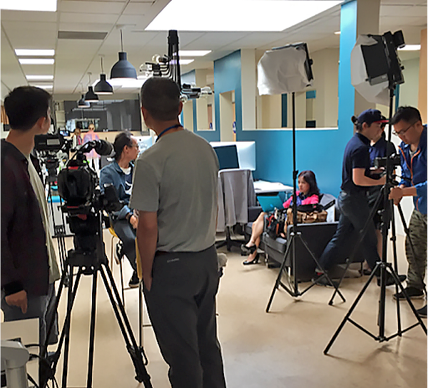
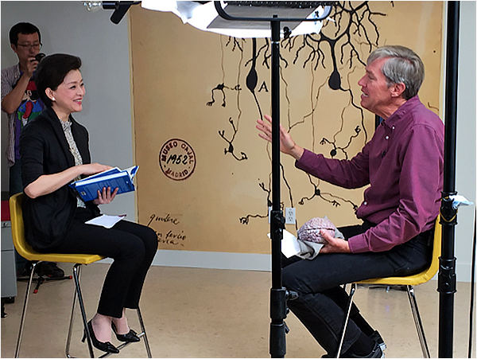

An Insider’s Look: Interview with Yang Lan and Jeff Hawkins
 Taylor Wirfs•Marketing
Taylor Wirfs•MarketingIn the two years I’ve been at Numenta, I’ve seen the field of AI grow to become a focal point of technology news. During this same time, I’ve also witnessed the interest in our work continues to grow.
So it didn’t come as a surprise when I learned a Chinese TV crew wanted to film an interview with our co-founder, Jeff Hawkins, at our office. But it did come as a surprise to hear that the interview was with Yang Lan, a prominent broadcast journalist and figure who has been referred to as the Oprah of China. She hosts several TV talk shows, is the cofounder and chairperson of Sun Media Group and Sun Culture Foundation, and was listed by Forbes as one of the top 100 most powerful women.
The interview with Jeff is to be featured as part of Yang Lan’s upcoming documentary series on Artificial Intelligence. Yang Lan and her team travelled across the globe to interview knowledgeable researchers, technologists and leaders on their opinions and findings. The documentary series is set to air in China at the end of this year and will be seen by upwards of a billion people; there will be an English version afterwards as well.
We’ll update this blog when the interview becomes available, with instructions on how to access it.
The View Behind the Scenes
The film and production crew of 11 (yes eleven!) people arrived at our office in Redwood City, CA; a bit early for the 8:30 a.m. appointment and quickly took over our office. A coordinator based on the west coast had visited Numenta a week prior to the interview, to discuss details and scout the office for filming locations. The team chose to set up two chairs in the middle of the office, with a view of a neuron mural from neuroscientist Santiago Ramon y Cajal, on our wall in the background.
We have a small team at Numenta, around 15 employees plus a few interns that join us every summer, so our office is small. Thursday is a no-meeting day, when many employees choose to work from home. This worked well to accommodate the large film crew, as the staff members who were present were displaced from their desks to various locations around the office.

This photo only shows half of the production crew. Other members were busy in one of our conference rooms.
Yang Lan arrived once the cameras were setup, and was greeted by our eager staff and her production crew. After a few introductions, sound checks and lighting adjustments, the cameras began rolling.
Her first few questions focused on Jeff’s background and how he arrived at Numenta’s mission today - reverse-engineering the neocortex. Jeff referenced his prior work as “computers were fun to work on, but my real passion was brains.” He described solving brains as a difficult problem, but also as one of the most important problems in the world.
The next series of questions from Yang Lan evoked a more lively discussion. It was clear that she knew Numenta’s approach was different than traditional machine learning methods, but she wanted Jeff to explain why. He went into detail on why Numenta is studying the neocortex as a blueprint for machine intelligence. Jeff defined intelligence and highlighted one of the crucial processes involved when learning a model of the world: “the brain works on time-based data.” He also addressed the fears from those concerned with the creation of intelligent machines, a highly debated topic in artificial intelligence.

Yang Lan interviews Jeff Hawkins at our office.
The interview went smoothly, with the exception of an interruption from a deliveryman at our door. After the interview, Jeff showed Yang Lan several of our example applications and visualizations, to help her audience visualize our technology. A Numenta employee, who was working remotely, signed on to our tele-presence robot (made by Double Robotics) and introduced himself while navigating the robot through the office for Yang Lan and her film crew.
Between set-up, the interview, b-roll footage and takedown, the production team spent four hours at our office, but by the afternoon, the office had returned to its norm. Seeing the effort that occurs behind the scenes of a documentary film interview was impressive. The real highlight though was witnessing the live, uncut version of an interview with Yang Lan. We don’t know what the final piece will look like and how the producers plan to include Numenta, but it was exciting to be a part of this documentary series.
Taylor Wirfs•Marketing